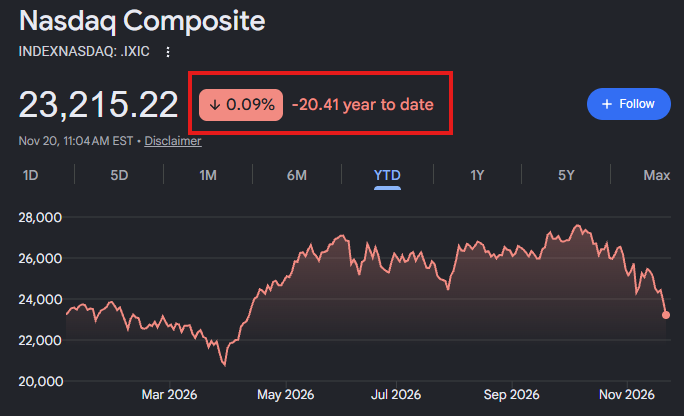
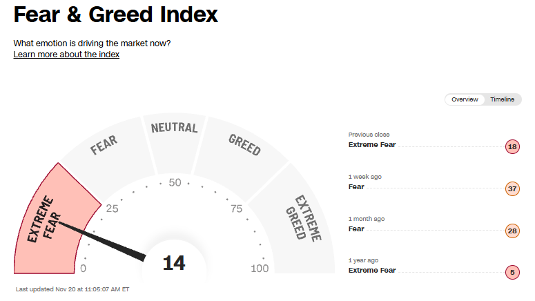
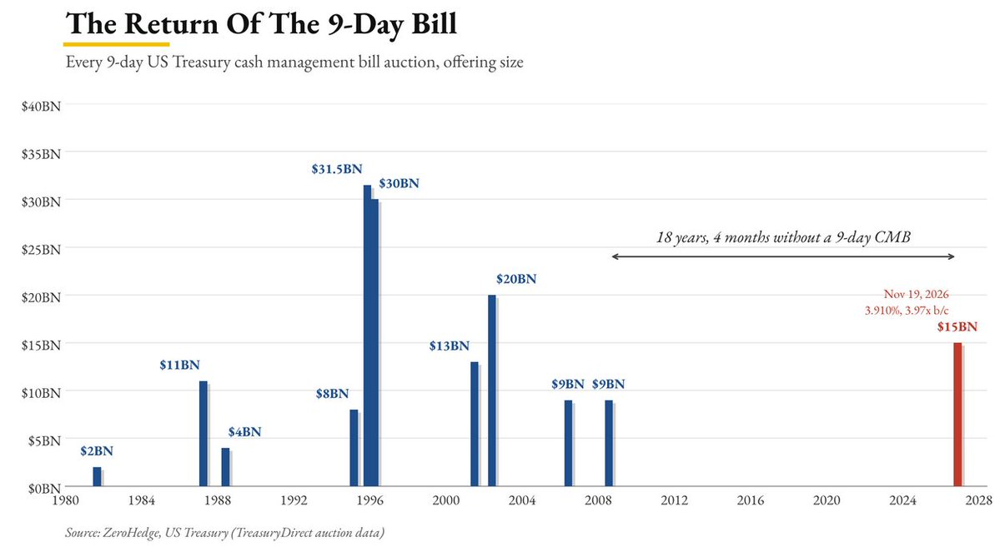
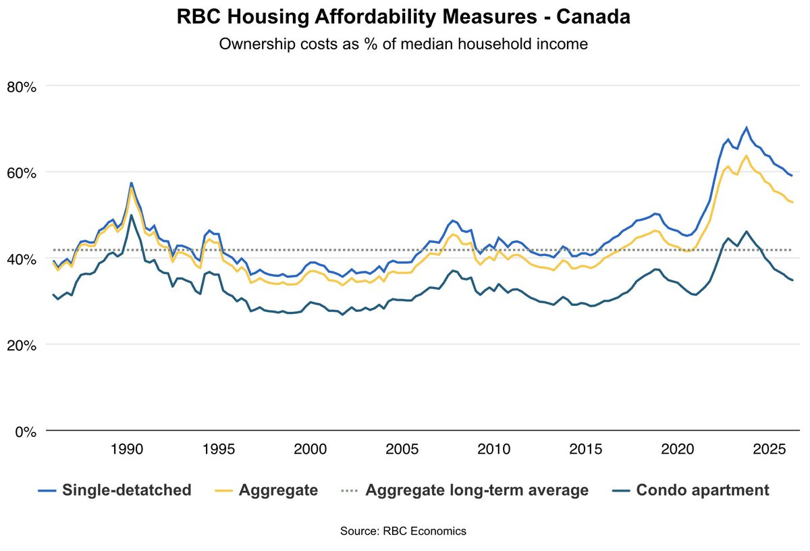
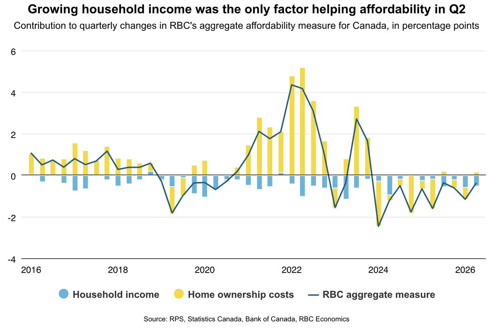

The unwind, and what it means for Canadian housing.
Talking points for Dan Foch and Simon Bélanger (@Fiat_iceberg). Richard Dias, CFA, may join. Arrow keys or swipe to move.
Press → to start
The Nasdaq slipped negative for 2026.

Source: TradingView snapshot of Nasdaq Composite (INDEXNASDAQ: IXIC), Nov 20, 2026, 11:04 AM EST, circulated with The Kobeissi Letter. The snapshot is mid-session, not the official Friday close. At that timestamp the index was 23,215.22, just through the implied 2025 close. Dow Jones / FactSet: Oct 6 close 27,599.79 was +18.75% YTD (Kobeissi’s “+19%” is a rounding of that peak); Nov 19 close 23,879.20 was still +2.74% YTD. Confirm the official Nov 20 close before going on air.
BullTheory: top AI stocks are down 53% from the peak.

Source: @BullTheoryio, Nov 20, 2026, 7:32 AM ET. The 39-name universe, the −53% average, the 5-month window, and the single-stock figures are the poster’s claims. The Nasdaq −78% (2000–02) and S&P 500 −57% (2007–09) index drawdowns on the chart match the standard peak-to-trough ranges; the “top stocks” averages are their basket math. The S&P “−8%” on the chart is a pre-open Nov 20 figure, not the Friday afternoon print.
Anthropic fell to within a nickel of its $83 IPO price.
Thursday, official: opened $111.50, high $115.10, closed $97.17, up 17% from the $83 offer.
Friday session low was $83.05 — 27.8% below that high, and five cents above the IPO price. That is a low, not a close. By mid-afternoon Fortune had it back around $87.
Sources: Axios; Fortune, updated 2:15 PM ET Nov 20, 2026; BBC; Yahoo Finance historical prints for Thursday (open $111.50, high $115.10, low $92.72, close $97.17). The Friday $83.05 low and “roughly $87” bounce are Fortune’s mid-session figures. Confirm the official Friday close before going on air.
“$1 trillion wiped from US stocks in 60 minutes.”

Source: @cryptorover, Nov 20, 2026, 11:01 AM ET. The $1 trillion / 60-minute and $80 billion crypto totals are the poster’s claim and were not independently verified from an official market-cap series. The image itself has no market-cap total. Use the official index moves (Nasdaq, S&P) on air, not the unverified headline. ANT is visible on the treemap at −9.97% in this morning snapshot.
CNN Fear & Greed at 14, Extreme Fear.

Source: CNN Fear & Greed Index screenshot circulated by The Kobeissi Letter, last updated Nov 20, 2026 at 11:05:07 AM ET, reading 14. Previous close 18; 1 week ago 37; 1 month ago 28; 1 year ago 5. Kobeissi’s “down 26 points in 8 days” and “lowest since the March 30 bottom” are the poster’s claims — the same snapshot’s one-week comparison is 37, not 40, and it does not show the March 30 reading. This is an 11:05 AM ET print, not a close.
$188.8 billion in revenue. Over $2 billion in diesel and freight.
Official total revenues $188.835 billion, up 5.2%, quarter ended Oct 31, 2026.
CFO John David Rainey, Nov 19 call: “between diesel and transportation, it will be over $2 billion of incremental costs that we’ve had to navigate this year.”
Sources: Walmart Q3 FY27 earnings release and earnings-call transcript, Nov 19, 2026. The post said “roughly $2B”; the official wording is “over $2 billion,” and it is diesel and transportation, not just fuel. The release does not tie that $2 billion to Canadian diesel or Canadian consumers.
Treasury sold a 9-day bill, the first since July 2008.

Source: chart via Barchart / ZeroHedge, sourced to TreasuryDirect auction data. Official TreasuryDirect results (R_20261119_4.pdf): 9-Day Cash Management Bill auctioned Nov 19, 2026, $15 billion offering, CUSIP 912797VA2, issue Nov 24, mature Dec 3, high discount rate 3.910%, investment rate 3.968%, bid-to-cover 3.97. Fiscal Data records a prior 9-day auction on July 21, 2008 ($9 billion, high discount 1.565%).
Five of the six named banks are in a bear market. Wells Fargo is not, yet.
@macropaperr said 6 of the 10 largest US banks were in bear territory, and had Wells Fargo at −20.1%. That −20.1% is not current — it matches an earlier Oct 14 post.
Mid-session, WFC is 18.8% below its Jan 5 high. Bank stress still matters for housing: tighter credit pushes against the rates tailwind.
Sources: @macropaperr, Nov 20, 2026, 1:09 PM ET; Yahoo Finance last prices around 3:06 PM ET Nov 20 vs each name’s 52-week high (BAC $65.23 Aug 17, WFC $97.76 Jan 5, GS $1,153.99 Jul 15, MS $232.25 Jul 15, COF $259.64 Jan 6, C $147.96 Jun 18, ^BKX 195.55 Aug 17). Mid-session, not the official Friday close. The 20% line is the usual bear-market threshold. KBW is 18.2% below that high, or 17.5% below the Aug 14 record close of 193.91; Friday’s 159.62 session low is the lowest since April 7, which supports the poster’s “7-month low,” as a low, not a close.
Young-to-old transfers got a lot larger.

Source: John Burn-Murdoch, Financial Times, “How pensions ate the state,” Nov 20, 2026. Chart title on the original: “Economic transfers from young to old have become far larger.” Taxes paid vs benefits and services received per person, by age, inflation-adjusted ($ or £, 000s), US and UK, 1979 vs 2024. Do not treat visual estimates as exact figures. The accessible chart is US and UK only.
One euro in four.
This is just the official FT #shorts figure, drawn as a share: pensions versus everything else in that public-goods-and-services bucket, for France, Spain and Italy.
It is not a G7 average, and it is not a Canadian number.
Source: Financial Times / John Burn-Murdoch official #shorts, Nov 20, 2026. Chart.js visualization of that stated 1-in-4 share only — no other values were estimated from the FT graphic.
Condo affordability has eased back toward 2017.

Source: RBC Economics, Housing Trends and Affordability, Q2 2026, published Sept 28, 2026, via Dan’s post. National aggregate 52.8%, improved 0.4 ppt. Toronto aggregate 64.1% (−1.2 ppts). RBC’s prose says Toronto’s condo segment reached its most favourable level since 2017. The national condo line on this chart sits back near 2017 visually; the report text we verified does not give a national condo percentage or an explicit “national condo is back to 2017” sentence. Measure: ownership costs as % of median pre-tax household income; 20% down, 25-year, 5-year fixed.
Income was the only thing helping affordability in Q2.

Source: RBC Economics, Housing Trends and Affordability, Q2 2026, published Sept 28, 2026. Quote from the report: “Rising household income accounted for the entire affordability gain in Canada in Q2 as home prices and rates held fairly steady.” Chart sources on the image: RPS, Statistics Canada, Bank of Canada, RBC Economics.
What the AI/equity unwind means for Canadian real estate.
The 5-year follows the bond bid.
A flight to bonds pulls down the 5-year GoC yield, and 5-year fixed rates follow. The 9-day bill is the front-end stress tell. Bank stress is the offset: tighter credit pushes against that rates tailwind. This builds on RBC’s point that income was the only thing helping affordability.
Tech-heavy buyers get hit first.
GTA detached and investor-condo buyers hold a lot of tech and AI stock. Move-up, luxury and 905 detached go first, and the last investor bid for condos disappears.
T-bills, gold and USD.
Not illiquid, leveraged real estate. A rotation into hard assets, if it comes, comes later.
2001 versus 2008.
In 2001 rates collapsed, jobs held, and housing was fine. The take: rates-positive, confidence-negative. Watch the 5-year yield and January’s jobs data.
Framing and opinion for the Nov 26 livestream, not a set of new numbers. Setup already on this deck: the Nasdaq year-to-date turn, the AI tape, the 9-day bill, the US bank drawdowns, and RBC’s Q2 affordability report.
Watch the 5-year, and wait for January jobs.
Notes for Simon are on the usual Page. This deck lives at tcipodcast.ca/research.